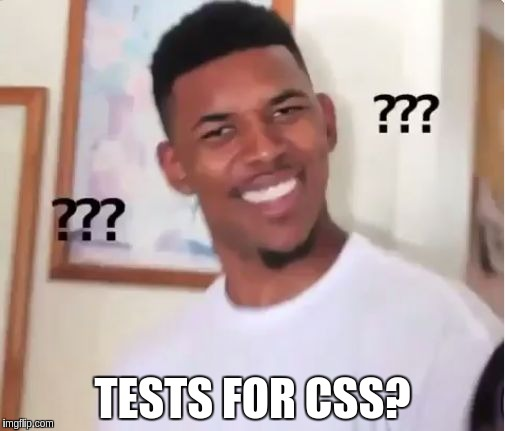
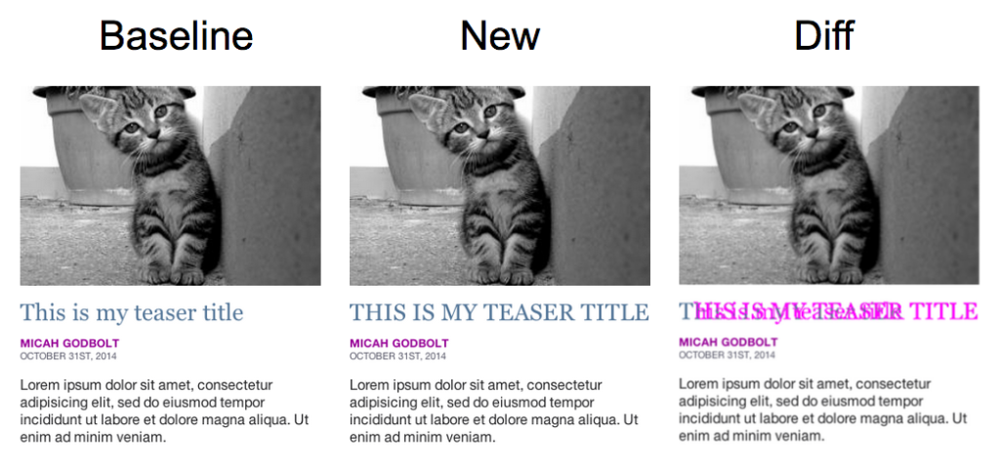
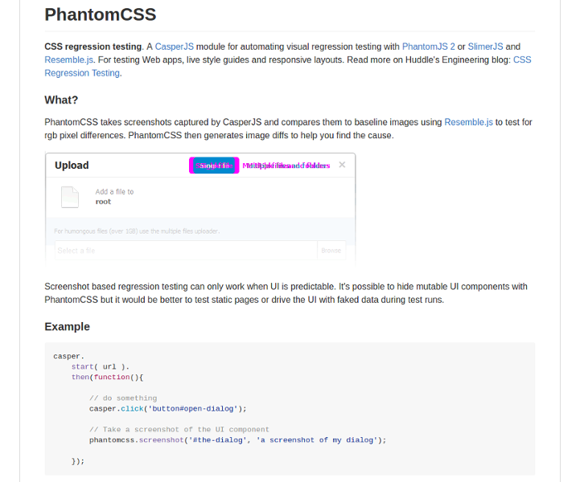
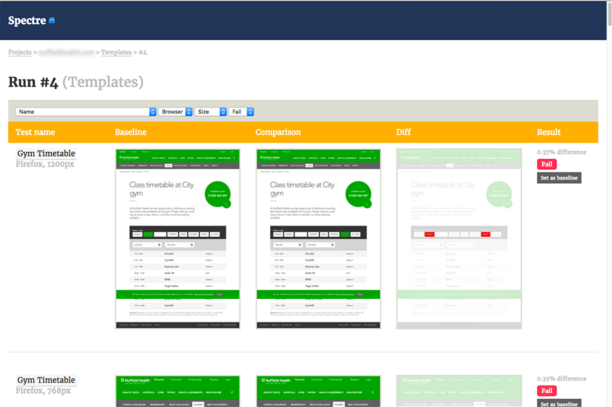
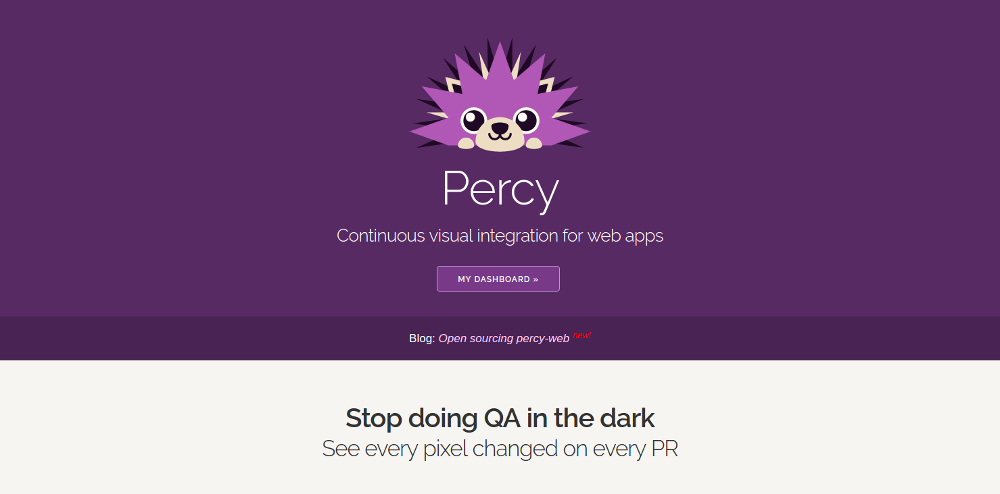

Functional CSS
Problems of CSS
- Cascading Style Sheets
- Hard to maintain
- Unused and duplicated code
CSS is hard to refactor

How can we solve this problem?
We can write tests for CSS

Visual regression tests
Visual regression tests

PhantomCSS

spectre

percy.io

Other tools
Challenges of visual regression testing
- Dynamic content
- Sharing tests with your team